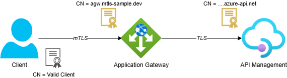
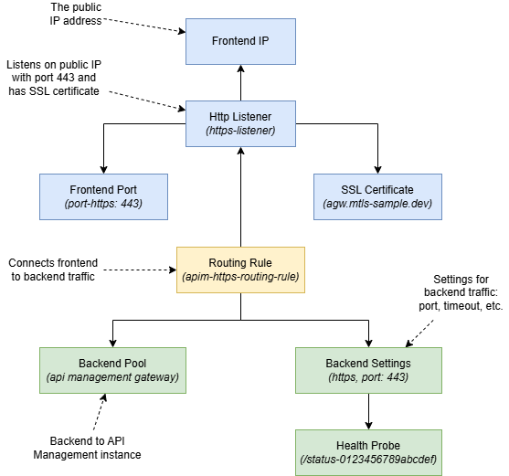
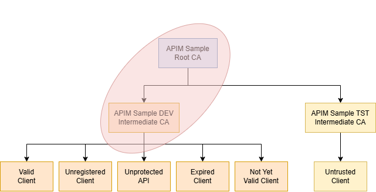
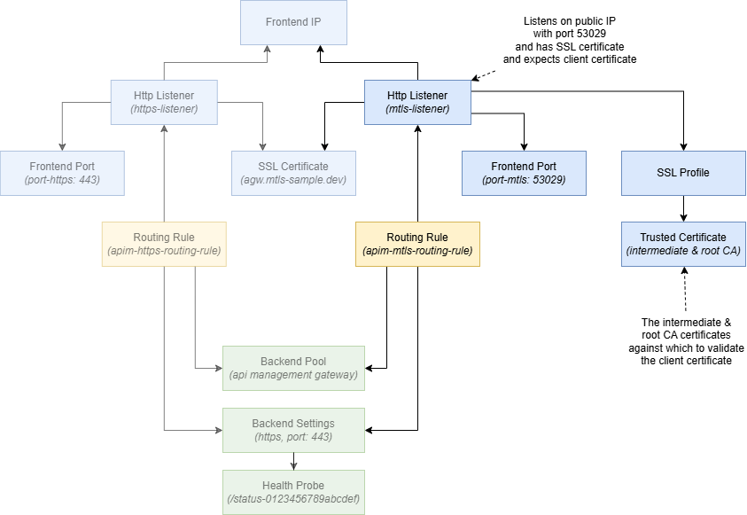
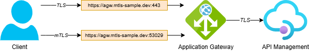
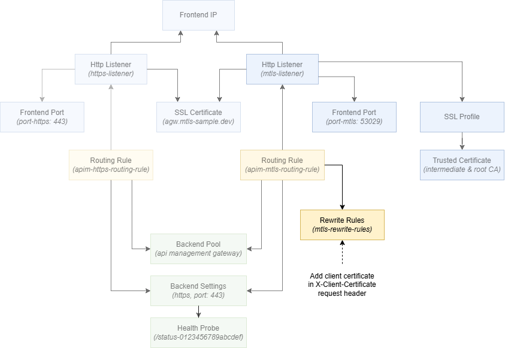
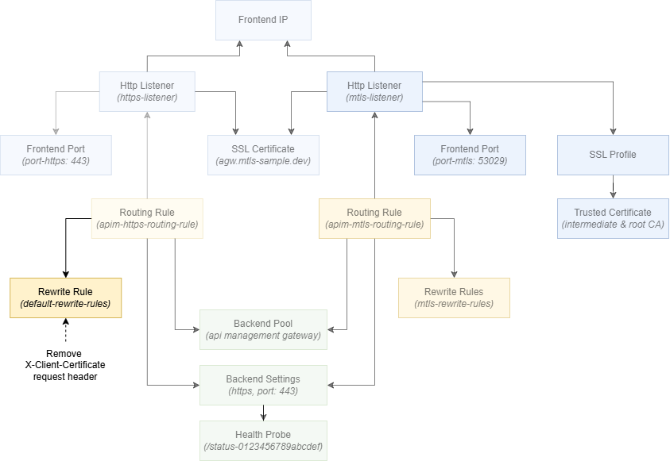
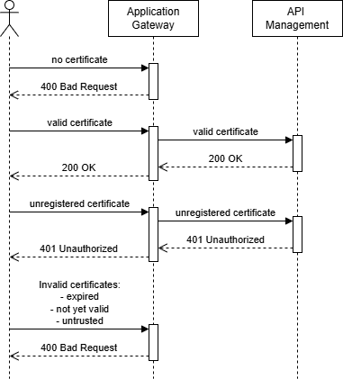
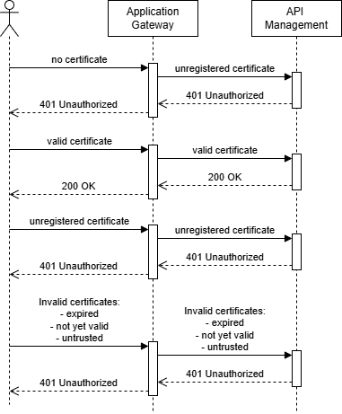

Validate client certificates in API Management when it's behind an Application Gateway

This post is the second in a series on working with client certificates in Azure API Management. Throughout the series, I’ll cover both the validation of client certificates in API Management and how to connect to backends with mTLS (mutual TLS) using client certificates.
While Azure’s official documentation provides excellent guidance on setting up client certificates via the Azure Portal, this series takes it a step further. We’ll dive into using Bicep to automate the process.
Topics covered in this series:
- Validate client certificates in API Management
- Validate client certificates in API Management when it’s behind an Application Gateway (current)
- Securing backend connections with mTLS in API Management
In this second post, we expand on the solution introduced in the previous post, but this time an Application Gateway is positioned in front of API Management instead of calling it directly. Using an Application Gateway (or similar resource) this way is a common approach because it can provide load balancing capabilities and enhanced control over inbound and outbound traffic. Additionally, the Web Application Firewall (WAF) feature provides improved security by protecting against common web-based attacks and vulnerabilities, such as SQL injection and cross-site scripting (XSS).
Table of Contents
- Solution Overview
- HTTPS Listener
- mTLS Listener
- Forwarding the Client Certificate to API Management
- Validating the Client Certificate in API Management
- Plugging the Security Hole
- Strict vs Passthrough
- Considerations
- Conclusion
Solution Overview
I’ve created an Azure Developer CLI (azd) template called mTLS with Azure API Management and Application Gateway that demonstrates three scenarios: validating client certificates when calling API Management directly, validating them when API Management is behind an Application Gateway and securing connections from API Management to backend systems using mTLS. See the following diagram for an overview of the solution.

Note that API Management is deployed in External mode in this template to support scenario 1 where direct access from the internet is necessary. When fronting API Management by an Application Gateway, you would normally deploy it inside the Virtual Network in internal mode.
This blog post focuses on scenario 2: validating client certificates when API Management is behind an Application Gateway. In this scenario, a client calls API Management via an Application Gateway using mTLS. The Application Gateway terminates the mTLS session, validates the client certificate (when in strict mode) and forwards the client certificate to API Management in a request header. API Management then validates the forwarded certificate.

The template includes self-signed certificates, but you can also use client certificates from a public CA. Using Generate and export certificates for point-to-site using PowerShell as a guide, I’ve created the following tree of certificates.

- APIM Sample Root CA: is the root CA for this sample
- APIM Sample DEV Intermediate CA: is intermediate CA for a ‘dev’ environment
- Valid Client: is registered in API Management as a valid client
- Unregistered Client: is NOT registered in API Management and should be blocked when explicitly checking client certificates
- Unprotected API: is used when the Unprotected API calls the Protected API using mTLS (used in Securing backend connections with mTLS in API Management)
- Expired Client: is an expired certificate for testing purposes
- Not Yet Valid Client: is a certificate that is valid in the future and used for testing purposes
- APIM Sample TST Intermediate CA: is intermediate CA for a ‘test’ environment
- Untrusted Client: can be used to test what happens when certificates from an untrusted intermediate CA are used
- APIM Sample DEV Intermediate CA: is intermediate CA for a ‘dev’ environment
You can find more details about the certificates here.
If you want to deploy and try the solution, check out the getting started section for the prerequisites and deployment instructions. When selecting the API Management SKU, keep the following in mind:
- Use a v2 tier like BasicV2 if you want a quick deployment and don’t need to validate the certificate chain of client certificates.
- Use a non-v2 tier like Developer if you need certificate chain validation. The deployment will take longer though.
To try out the implementation, follow the instructions in this demo.
HTTPS Listener
The solution uses both an HTTPS listener and an mTLS listener on the Application Gateway. The HTTPS listener is covered first as it forms the base that the mTLS listener builds on.
The Application Gateway needs to be deployed in a Virtual Network and have a public IP address in order to accept traffic from the internet. Configuration of these is beyond the scope of this post. You can find the configuration in virtual-network.bicep and public-ip-address.bicep.
Application Gateway
The following snippet shows the base configuration of the application gateway:
resource agwIdentity 'Microsoft.ManagedIdentity/userAssignedIdentities@2024-11-30' = {
name: applicationGatewayIdentityName
location: location
tags: tags
}
resource applicationGateway 'Microsoft.Network/applicationGateways@2025-05-01' = {
name: applicationGatewayName
location: location
properties: {
sku: {
name: 'Standard_v2'
tier: 'Standard_v2'
}
enableHttp2: false
autoscaleConfiguration: {
minCapacity: 0
maxCapacity: 2
}
gatewayIPConfigurations: [
{
name: 'agw-subnet-ip-config'
properties: {
subnet: {
id: subnetId
}
}
}
]
}
}
A user-assigned managed identity is created alongside the application gateway. The managed identity is used to access an SSL server certificate, required for TLS, stored in Key Vault. The gatewayIPConfigurations property connects the application gateway to the Virtual Network’s subnet it’s deployed in.
The managed identity needs to be assigned the “Key Vault Secrets User” role before deploying the Application Gateway. See key-vault.bicep for the Key Vault configuration and assign-roles-to-principal.bicep for how roles are assigned to a principal.
Several more Application Gateway components are necessary to allow HTTPS traffic and route it to API Management. The image below shows a visual representation of those components:

The configuration consists of three parts:
- The frontend for incoming traffic at the top defines the IP address, the protocol and port to use and the SSL certificate.
- The backend for outbound traffic at the bottom defines where requests should be forwarded to, including the protocol and port to use, timeouts and so on.
- The routing rule in the middle connects the frontend and backend configurations.
See Application gateway components for more information about the different components.
Frontend
The frontend is configured in the properties section of the application gateway:
frontendIPConfigurations: [
{
name: 'agw-public-frontend-ip'
properties: {
publicIPAddress: {
id: agwPublicIPAddress.id
}
}
}
]
frontendPorts: [
{
name: 'port-https'
properties: {
port: 443
}
}
]
sslCertificates: [
{
name: 'agw-ssl-certificate'
properties: {
keyVaultSecretId: sslServerCertificateSecret.properties.secretUri
}
}
]
httpListeners: [
{
name: 'https-listener'
properties: {
protocol: 'Https'
hostName: 'agw.mtls-sample.dev'
frontendIPConfiguration: {
id: resourceId('Microsoft.Network/applicationGateways/frontendIPConfigurations', applicationGatewayName, 'agw-public-frontend-ip')
}
frontendPort: {
id: resourceId('Microsoft.Network/applicationGateways/frontendPorts', applicationGatewayName, 'port-https')
}
sslCertificate: {
id: resourceId('Microsoft.Network/applicationGateways/sslCertificates', applicationGatewayName, 'agw-ssl-certificate')
}
}
}
]
As you can see, the frontend IP configuration is linked to the public IP address. The application gateway accepts traffic on the standard HTTPS port 443, so an SSL certificate is configured as well. The HTTP listener ties these components together. We’ll refer to this listener as the HTTPS listener for the remainder of this post.
Note that the hostname agw.mtls-sample.dev is used in the listener configuration. In the sample template, no public DNS record or domain is configured. Instead, a self-signed server certificate is used for this hostname and the Application Gateway is accessed through its public IP address, passing agw.mtls-sample.dev in the Host request header.
SSL Certificate
The SSL server certificate is referenced from Key Vault using the following snippet:
resource keyVault 'Microsoft.KeyVault/vaults@2025-05-01' existing = {
name: keyVaultName
}
resource sslServerCertificateSecret 'Microsoft.KeyVault/vaults/secrets@2025-05-01' existing = {
name: 'agw-ssl-server-certificate'
parent: keyVault
}
See postprovision-create-agw-server-certificate.ps1 for the script that generates the self-signed server certificate and uploads it to Key Vault.
Backend
The backend configuration routes incoming requests to the API Management instance:
backendAddressPools: [
{
name: 'apim-gateway-backend-pool'
properties: {
backendAddresses: [
{
fqdn: '${apiManagementServiceName}.azure-api.net'
}
]
}
}
]
probes: [
{
name: 'apim-gateway-probe'
properties: {
pickHostNameFromBackendHttpSettings: true
interval: 30
timeout: 30
path: '/status-0123456789abcdef'
protocol: 'Https'
unhealthyThreshold: 3
match: {
statusCodes: [
'200-399'
]
}
}
}
]
backendHttpSettingsCollection: [
{
name: 'apim-gateway-backend-settings'
properties: {
port: 443
protocol: 'Https'
cookieBasedAffinity: 'Disabled'
hostName: '${apiManagementServiceName}.azure-api.net'
requestTimeout: 20
probe: {
id: resourceId('Microsoft.Network/applicationGateways/probes', applicationGatewayName, 'apim-gateway-probe')
}
}
}
]
The backend pool routes requests to API Management using its fully qualified domain name. More options for backend pool targets can be found here.
The probe monitors the health of all resources in the backend pool, using the /status-0123456789abcdef path, which is the default health endpoint provided by API Management.
The backend HTTP settings define the port and protocol to use, the backend hostname and the associated health probe. Note that the backend uses a regular TLS connection to communicate with API Management. It’s currently not possible to use mTLS between the Application Gateway and a backend pool. See the FAQ for more details.
Request Routing Rule
The request routing rule connects the frontend and backend configurations:
requestRoutingRules: [
{
name: 'apim-https-routing-rule'
properties: {
priority: 10
ruleType: 'Basic'
httpListener: {
id: resourceId('Microsoft.Network/applicationGateways/httpListeners', applicationGatewayName, 'https-listener')
}
backendAddressPool: {
id: resourceId('Microsoft.Network/applicationGateways/backendAddressPools', applicationGatewayName, 'apim-gateway-backend-pool')
}
backendHttpSettings: {
id: resourceId('Microsoft.Network/applicationGateways/backendHttpSettingsCollection', applicationGatewayName, 'apim-gateway-backend-settings')
}
}
}
]
With this routing rule in place, any request to port 443 on the Application Gateway will be routed to API Management. The frontend, backend and routing rule together form a complete HTTPS listener configuration.
mTLS Listener
Before looking at the mTLS configuration, it’s helpful to understand how the Application Gateway performs client certificate validation. The Application Gateway doesn’t have the capability to whitelist individual client certificates as we did in the previous post. Instead, it verifies whether a client certificate was issued by a trusted certificate authority (CA).
In our sample, only client certificates issued by APIM Sample DEV Intermediate CA are allowed to call the Application Gateway. The figure below highlights the certificates that need to be uploaded for this to work.

When using a well-known certificate authority, it’s worth noting the guidance provided in Overview of mutual authentication with Application Gateway:
“When you issue client certificates from well-established certificate authorities, consider working with the certificate authority to see if an intermediate certificate can be issued for your organization. This approach prevents inadvertent cross-organizational client certificate authentication.”
The components configured for the HTTPS listener, such as the SSL certificate and backend configuration, can be reused for the mTLS listener. The figure below highlights the new components that are added:

A second listener accepts traffic on port 53029. An SSL profile with trusted certificates is configured to validate the client certificate and a new routing rule routes traffic to the existing API Management backend.
Note that this setup allows both TLS and mTLS traffic to the Application Gateway as shown in the following diagram.

This can be useful when you support multiple authentication methods. Some clients may use a client certificate for authentication via mTLS, while others may authenticate with a bearer token over standard TLS.
Having multiple listeners for different authentication methods is less relevant with the introduction of mTLS passthrough mode, which is covered later in this post. I’ve kept this setup because the sample template supports both strict and passthrough modes, and because it introduces a potential security issue that is discussed in the Plugging the Security Hole section.
Prepare Certificate Chain
Because only client certificates issued by a specific self-signed intermediate CA are allowed, the complete certificate chain needs to be uploaded. The chain must be in a single .cer file and include all intermediate CAs and the root CA.
The dev-intermediate-ca-with-root-ca.cer file is used in the template. When creating your own, take the public part of all certificates in the chain and combine them in a single .cer file. The result should look similar to the example below:
-----BEGIN CERTIFICATE-----
MIIDOjCCAiKgAwIBAgIQZk5nkg3ljYVOM77uz5hVODANBgkqhkiG9w0BAQsFADAeMRwwGgYDVQQD
DBNBUElNIFNhbXBsZSBSb290IENBMCAXDTI0MDIwMjA4Mzk0M1oYDzIwNzQwMjAyMDg0OTQzWjAq
............................... TRUNCATED ..................................
o6jtMJfs6GPOtG4nPSWkVt5rBwJ4d0DyXtEWeD+/I480AlzHcc5ouD9qIvxOEp8g7mqNiOgeTu3S
SDaqFo055aIYM5iChX9twG3FSUc03YtgfuwlkeXEA+Q=
-----END CERTIFICATE-----
-----BEGIN CERTIFICATE-----
MIIDCjCCAfKgAwIBAgIQTnzUTsk8yb1GxOisPnNyQjANBgkqhkiG9w0BAQsFADAeMRwwGgYDVQQD
DBNBUElNIFNhbXBsZSBSb290IENBMCAXDTI0MDIwMjA4Mzk0MloYDzIwNzQwMjAyMDg0OTQyWjAe
............................... TRUNCATED ..................................
3IDy7OcjtfLZkCstp18fS7yzk/+LmUOk2wUHJKl2PwfninaUA0m+k58fMZXYFZ80p/MFX8BpBLdQ
tPq4cH7fgj/8rE8pMN4cCv/3SfpaDwgPdfHEOL5C+A7eVgY8jtp79JQ=
-----END CERTIFICATE-----
SSL Profile with Trusted Certificate
The SSL profile and trusted certificate are configured in the properties section of the application gateway:
trustedClientCertificates: [
{
name: 'intermediate-ca-with-root-ca'
properties: {
data: loadTextContent('<path-to-certificates>/dev-intermediate-ca-with-root-ca.cer')
}
}
]
sslProfiles: [
{
name: 'mtls-ssl-profile'
properties: {
clientAuthConfiguration: {
verifyClientAuthMode: 'Strict'
// By setting verifyClientCertIssuerDN to true the intermediate CA is also checked, not just the Root CA.
// See https://learn.microsoft.com/en-us/azure/application-gateway/mutual-authentication-overview?tabs=powershell#verify-client-certificate-dn
verifyClientCertIssuerDN: true
}
trustedClientCertificates: [
{
id: resourceId('Microsoft.Network/applicationGateways/trustedClientCertificates', applicationGatewayName, 'intermediate-ca-with-root-ca')
}
]
}
}
]
The verifyClientAuthMode is set to Strict, which is the default, so the Application Gateway will require a client certificate to be provided during the TLS handshake.
The verifyClientCertIssuerDN setting is set to true. By default, only the root CA certificate is checked. In this example, that would mean a client certificate issued by APIM Sample TST Intermediate CA for the test environment would be accepted, even though only the APIM Sample DEV Intermediate CA certificate was uploaded for the development environment. Setting verifyClientCertIssuerDN to true ensures the intermediate certificate is also checked, so only certificates issued by APIM Sample DEV Intermediate CA are accepted. You can find more details about this setting here.
mTLS Port
Since port 443 is already used by the HTTPS listener, a second port is configured for the mTLS listener. The following entry in the frontendPorts array configures the mTLS port:
{
name: 'port-mtls'
properties: {
port: 53029
}
}
The template doesn’t have any NSG rules configured for the Application Gateway subnet. If your own setup does, you may also need to allow inbound traffic on port 53029.
mTLS Listener
The mTLS listener is configured in the httpListeners array:
{
name: 'mtls-listener'
properties: {
protocol: 'Https'
hostName: 'agw.mtls-sample.dev'
frontendIPConfiguration: {
id: resourceId('Microsoft.Network/applicationGateways/frontendIPConfigurations', applicationGatewayName, 'agw-public-frontend-ip')
}
frontendPort: {
id: resourceId('Microsoft.Network/applicationGateways/frontendPorts', applicationGatewayName, 'port-mtls')
}
sslCertificate: {
id: resourceId('Microsoft.Network/applicationGateways/sslCertificates', applicationGatewayName, 'agw-ssl-certificate')
}
sslProfile: {
id: resourceId('Microsoft.Network/applicationGateways/sslProfiles', applicationGatewayName, 'mtls-ssl-profile')
}
}
}
The listener reuses the frontend IP configuration and SSL certificate from the HTTPS listener. The frontend port and SSL profile are specific to the mTLS listener.
Routing Rule
The following entry is configured in the requestRoutingRules array to route traffic from the mTLS listener to the existing API Management backend:
{
name: 'apim-mtls-routing-rule'
properties: {
priority: 20
ruleType: 'Basic'
httpListener: {
id: resourceId('Microsoft.Network/applicationGateways/httpListeners', applicationGatewayName, 'mtls-listener')
}
backendAddressPool: {
id: resourceId('Microsoft.Network/applicationGateways/backendAddressPools', applicationGatewayName, 'apim-gateway-backend-pool')
}
backendHttpSettings: {
id: resourceId('Microsoft.Network/applicationGateways/backendHttpSettingsCollection', applicationGatewayName, 'apim-gateway-backend-settings')
}
}
}
This is all that’s needed to enable mTLS on the Application Gateway and is enough if you only want to verify that the client certificate was issued by a trusted CA.
Forwarding the Client Certificate to API Management
In order for API Management to perform further validation of the client certificate, the Application Gateway needs to forward it. This is done by placing the client certificate in a request header using a rewrite rule. The client_certificate server variable provides access to the certificate, which is then written to the X-Client-Certificate header. For more information on the available server variables, see Rewrite HTTP headers and URL with Application Gateway.
The figure below shows the rewrite rule and how it’s linked to the routing rule of the mTLS listener:

The rewrite rule is configured in the properties section of the application gateway:
rewriteRuleSets: [
{
name: 'mtls-rewrite-rules'
properties: {
rewriteRules: [
{
ruleSequence: 100
conditions: []
name: 'Add Client certificate to HTTP request header'
actionSet: {
requestHeaderConfigurations: [
{
headerName: 'X-Client-Certificate'
headerValue: '{var_client_certificate}'
}
]
responseHeaderConfigurations: []
}
}
]
}
}
]
The rewrite rule is linked to the mTLS routing rule via the following property in apim-mtls-routing-rule:
rewriteRuleSet: {
id: resourceId('Microsoft.Network/applicationGateways/rewriteRuleSets', applicationGatewayName, 'mtls-rewrite-rules')
}
Validating the Client Certificate in API Management
When the Application Gateway passes the client certificate to API Management in the X-Client-Certificate header, it contains the public part of the certificate in base64 format and is URL encoded. Here’s an example:
-----BEGIN%20CERTIFICATE-----%0AMIIDRTCCAi.....TRUNCATED.....6Zdlr9V53Q%3D%3D%0A-----END%20CERTIFICATE-----%0A
To validate the client certificate in API Management, the following policy snippet can be used:
<choose>
<!-- Check if the client certificate header is missing -->
<when condition="@(string.IsNullOrWhiteSpace(context.Request.Headers.GetValueOrDefault("X-Client-Certificate")))">
<set-variable name="certificateValidationResult" value="ClientCertificateNotFound" />
</when>
<otherwise>
<!-- Extract the client certificate from the header, parse it and store the value in a variable -->
<set-variable name="clientCertificate" value="@{
var clientCertHeader = context.Request.Headers.GetValueOrDefault("X-Client-Certificate");
// Decode the header value (e.g. replace %20 with a whitespace) and remove the begin and end certificate markers.
// The result is the base64 encoded certificate in X.509 (.cer) format without the private key.
var pem = System.Net.WebUtility.UrlDecode(clientCertHeader)
.Replace("-----BEGIN CERTIFICATE-----", "")
.Replace("-----END CERTIFICATE-----", "");
// We can't store a certificate as type X509Certificate2, so we store the byte array that can be used to instantiate a X509Certificate2.
return Convert.FromBase64String(pem);
}" />
<!-- Determine if the client certificate is (in)valid and store the reason in a variable -->
<set-variable name="certificateValidationResult" value="@{
var certificate = new X509Certificate2(context.Variables.GetValueOrDefault<byte[]>("clientCertificate"));
var now = DateTime.Now; // We are using DateTime.Now because NotBefore and NotAfter are in local time
if (certificate.NotBefore > now)
{
return "ClientCertificateNotYetValid";
}
if (certificate.NotAfter < now)
{
return "ClientCertificateExpired";
}
if (!certificate.VerifyNoRevocation())
{
return "ClientCertificateNotTrusted";
}
if (!context.Deployment.Certificates.Any(c => c.Value.Thumbprint == certificate.Thumbprint))
{
return "ClientCertificateIdentityNotMatched";
}
return null;
}" />
</otherwise>
</choose>
<choose>
<!-- Trace and return a 401 Unauthorized if the client certificate is not valid -->
<when condition="@(context.Variables.GetValueOrDefault<string>("certificateValidationResult") != null)">
<trace source="validate-from-agw" severity="error">
<message>@("Client certificate validation failed: " + context.Variables.GetValueOrDefault<string>("certificateValidationResult"))</message>
</trace>
<return-response>
<set-status code="401" />
</return-response>
</when>
</choose>
The first choose block checks whether the X-Client-Certificate header is present. When it’s missing, the validation result is set to ClientCertificateNotFound. When the header is present, the policy does the following:
- Reads the value of the
X-Client-Certificateheader. - URL decodes the string (replacing characters like
%20with whitespace) and removes the-----BEGIN CERTIFICATE-----and-----END CERTIFICATE-----markers. - Converts the resulting base64 string into a byte array. The byte array is stored in a variable because a
X509Certificate2object can’t be stored directly in a policy variable. - Constructs the X509Certificate2 object and checks the validity period, the trust chain and whether the certificate matches any of the uploaded client certificates.
Since X509Certificate2 is the same type as context.Request.Certificate, the same checks as shown in the Validate Client Certificate Using the Context section of the previous post can be applied here.
The second choose block traces the validation result and returns a 401 Unauthorized response if the certificate is missing or invalid.
The full policy implementation can be found in validate-from-agw.operation.xml.
Plugging the Security Hole
The policy implementation relies on the presence of the X-Client-Certificate header to verify whether a valid client certificate was provided. But since this is just a string in a request header, an attacker could potentially bypass the check by calling the HTTPS listener (or APIM directly) and include a crafted value for the X-Client-Certificate header. You can test this yourself by following the instructions in the Demonstrate the security concern section of the demo.
There are several ways to address this:
- If mTLS is required for all communication, configuring only an mTLS listener on the Application Gateway is the simplest option.
- Another approach is removing the
X-Client-Certificateheader from requests sent to the HTTPS listener, ensuring that only the mTLS listener will add the header to requests forwarded to API Management. This is the solution implemented in the template.
For both approaches, it’s also necessary to ensure that API Management is exclusively accessible through the Application Gateway, with direct access restricted. If direct access needs to be supported as well, the ideal approach would involve the Application Gateway authenticating itself to API Management using its own client certificate and only relying on the X-Client-Certificate header in that scenario. As mentioned earlier, this is currently not possible.
As an alternative, consider adding multiple hostnames to API Management. One hostname can be used exclusively by the Application Gateway, while another can be used for other types of communication. The authentication mechanism can then be determined based on the hostname on which the request was received. Implementing this is beyond the scope of this post.
To remove the X-Client-Certificate header from requests sent to the HTTPS listener, a second rewrite rule is introduced. The figure below shows this new rule:

The following entry is configured in the rewriteRuleSets array:
{
name: 'default-rewrite-rules'
properties: {
rewriteRules: [
{
ruleSequence: 100
conditions: []
name: 'Remove X-Client-Certificate HTTP request header'
actionSet: {
requestHeaderConfigurations: [
// We need to remove the client certificate header from the default listener,
// to prevent clients from tricking APIM into thinking a successful mTLS connection was established.
{
headerName: 'X-Client-Certificate'
headerValue: ''
}
]
responseHeaderConfigurations: []
}
}
]
}
}
The rewrite rule is linked to the HTTPS routing rule via the following property in apim-https-routing-rule:
rewriteRuleSet: {
id: resourceId('Microsoft.Network/applicationGateways/rewriteRuleSets', applicationGatewayName, 'default-rewrite-rules')
}
With this, clients won’t be able to pass the X-Client-Certificate header to API Management through the Application Gateway.
Strict vs Passthrough
The samples above rely on mTLS strict mode, where the Application Gateway enforces client certificate authentication during the TLS handshake by requiring a valid client certificate. This is the default behavior.
The following sequence diagram shows what happens for the different client certificates described in the solution overview:

As you can see, only certificates issued by a trusted CA are forwarded to API Management. Note that the unregistered certificate passes the Application Gateway’s check because it’s issued by a trusted CA, but results in a 401 Unauthorized from API Management because it’s not registered as a valid client certificate (see previous post for details).
In recent years, mTLS passthrough mode has been added as a second option. In passthrough mode, the Application Gateway requests a client certificate during the TLS handshake but doesn’t terminate the connection if the certificate is missing or invalid. The connection to the backend proceeds regardless of the certificate’s presence or validity. If a certificate is provided, the Application Gateway can forward it to the backend. The backend service is then responsible for validating the client certificate.
To switch to passthrough mode, set verifyClientAuthMode to Passthrough in the SSL profile. No trusted client certificates need to be configured, since the Application Gateway no longer validates the client certificate:
sslProfiles: [
{
name: 'mtls-ssl-profile'
properties: {
clientAuthConfiguration: {
verifyClientAuthMode: 'Passthrough'
}
trustedClientCertificates: []
}
}
]
Passthrough mode simplifies the Application Gateway configuration and provides more flexibility in authentication. For example, the same listener can be reused for both mTLS and OAuth-based authentication. The tradeoff is that proper validation logic in the backend becomes more important.
The following sequence diagram shows the behavior for the different client certificates in passthrough mode:

As you can see, all requests are forwarded to API Management in passthrough mode.
Considerations
The header X-ARR-ClientCert is commonly used to pass a client certificate in similar scenarios. Azure App Service uses it to pass a client certificate to an application like an ASP.NET Web API (see Configure TLS mutual authentication for Azure App Service). However, using it in the Application Gateway when forwarding the certificate to API Management doesn’t work in v2 tiers such as BasicV2. In those tiers the header will be empty when it reaches your policies. That’s why X-Client-Certificate is used as the header name in this template.
Conclusion
In this post, we’ve explored how to validate a client certificate in API Management when it’s behind an Application Gateway. There’s quite a bit more involved than simply establishing an mTLS connection with API Management directly. The Application Gateway configuration in particular can be complex at first, so I hope this post gives you a solid start.
The demo solution uses an HTTPS listener alongside an mTLS listener on the Application Gateway. The mTLS listener forwards the client certificate to API Management via the X-Client-Certificate header. On the API Management side, a policy reads the forwarded certificate from the header, decodes it and applies the same validation checks as when calling API Management directly.
The solution also addresses the security hole that can appear when relying on a header for certificate validation. By stripping the X-Client-Certificate header from requests coming through the regular HTTPS listener, clients can’t bypass the check. Restricting direct access to API Management so all traffic flows through the Application Gateway is equally important.
The demo supports both strict and passthrough modes on the Application Gateway. Strict mode offloads some of the validation burden to the Application Gateway, while passthrough mode offers more flexibility at the cost of requiring more thorough validation in API Management.
The next post in this series covers the other direction: how API Management connects to backend services using mTLS with client certificates.